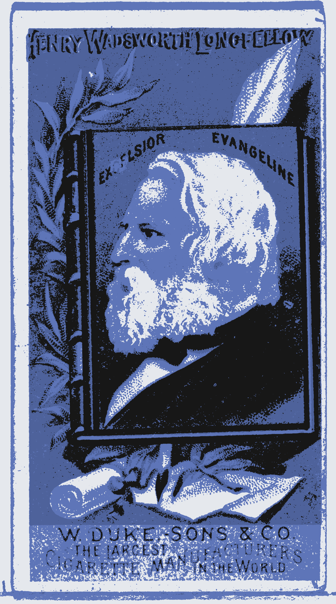

█ █
▀▄▀ivimos gobernados por los técnicos del apocalipsis, los ingenieros del apocalipsis; hombres y mujeres normales que argumentan, que razonan, defienden, justifican, diseñan, optimizan, gestionan, realizan, perpetran, ejecutan el apocalipsis. Años más tarde se reunen y lloran frente a una peli en blanco y negro sobre el apocalipsis. A la mañana siguiente, a las 8:00 ―primera hora del día―, toman café, hablan de los niños y preparan los planos del próximo puto apocalipsis.
Los Técnicos del Apocalípsis
